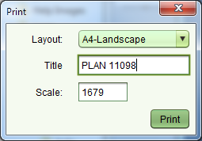
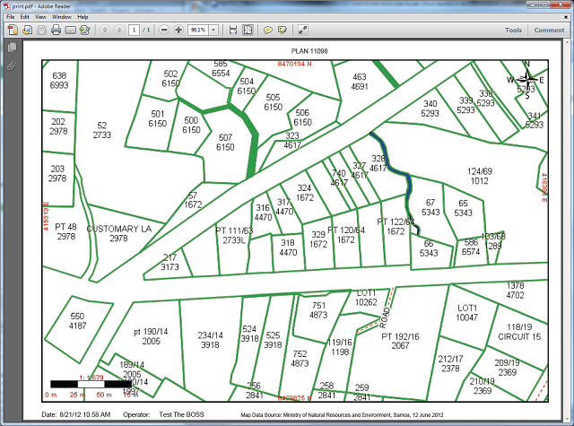

The Print Tool
can be used to export the current view of the map to a PDF file for printing. Before
printing, you should setup the map with the layers you want to include in the print by
turning them on or off. Once you have arranged the map with the information you want on the
print, click the Print Tool. This will display the Print dialog where you can select the
layout (currently A4-Landscape or A4-Portrait) set a title for the print as well as the
change the map scale.
Print Tool
can be used to export the current view of the map to a PDF file for printing. Before
printing, you should setup the map with the layers you want to include in the print by
turning them on or off. Once you have arranged the map with the information you want on the
print, click the Print Tool. This will display the Print dialog where you can select the
layout (currently A4-Landscape or A4-Portrait) set a title for the print as well as the
change the map scale.

Map Print dialog
Click the Print button to generate a PDF document containing the image of the map. If you have Adobe Reader or an equivalent PDF viewer installed, the PDF document will display automatically.

Spatial Print PDF
From here you can use the standard print functions of the PDF Viewer to print the image to your local printer.
NOTE: The Samoa Aerial layer is excluded from all printouts and will not show on the printout.